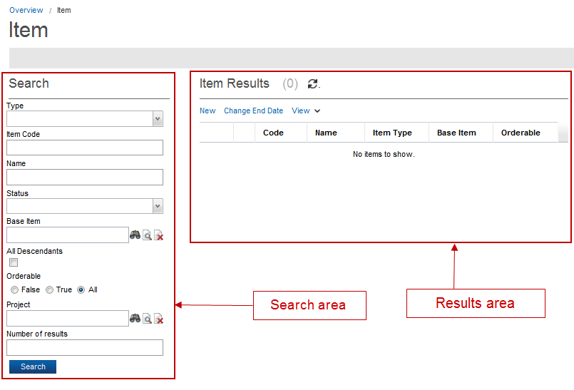

Search an Item
The Catalog application allows you to search the items. The following steps describe how to search an item:
- From the Overview page, click Commercial Modeling > Items in the Quick start section.
- The Item page appears.

- Enter or select the information for following fields and options available for the search section:
| Field/ Icon |
Description |
| Type |
This field's drop- down list allows you to select the type of an item (for example, component, product, offer, and so on). |
| Item Code |
Enter the item code in this field. |
| Name |
Enter the name of your item. This field is for internal use when designing your catalog model. This field is not supported by language translation. |
| Status |
This field denotes the status of an item. Click the drop-down list and select the status (for example, New, Conception, Evaluation, and so on). |
| Base Item |
Click the Search icon to open the items finder. It identifies from which Component the current Component is extending, if applicable. Select an item from the finder list. |
| All Descendants |
This field is related to the Base Item field. When selected, this option includes all descendant items in your search. Otherwise, only immediate descendants are included in your search. |
| Order able |
This field allows you to filter items. This field has three check boxes True, False, and All. This field defaults to All. |
| Project |
Click this field's Search button to specify a project in which to search for your item. |
| Number of results |
Specify the number of results displayed in the results pane. The default value for this field is 100. |
| Search Icon () |
Clicking this icon opens another finder page. |
| Detail Icon () |
Click this icon to view the details of the selected object in the field. |
| Clear Icon () |
Click this icon to clear the values in the field. |
- Click the Search button; the results displays in the results area.
|